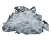
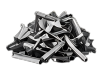
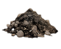

O que você deseja triturar?
Cada material possui características específicas. Por isso, desenvolvemos linhas completas de equipamentos para entregar o máximo desempenho em cada aplicação.

Plásticos

Madeira

Papel e Papelão

Resíduos Industriais

Borracha

Alumínio

Outros
Linha recomendada para
Sucata
Equipamentos robustos e potentes, desenvolvidos para triturar os mais diversos tipos de sucata metálica com alta eficiência e segurança.
Estrutura reforçada
Maior vida útil e durabilidade
Alto torque
Desempenho superior mesmo em materiais mais resistentes
Máxima produtividade
Mais toneladas trituradas por hora
Baixa manutenção
Projetos inteligentes que reduzem custos
Imagem do equipamento ou gráfico